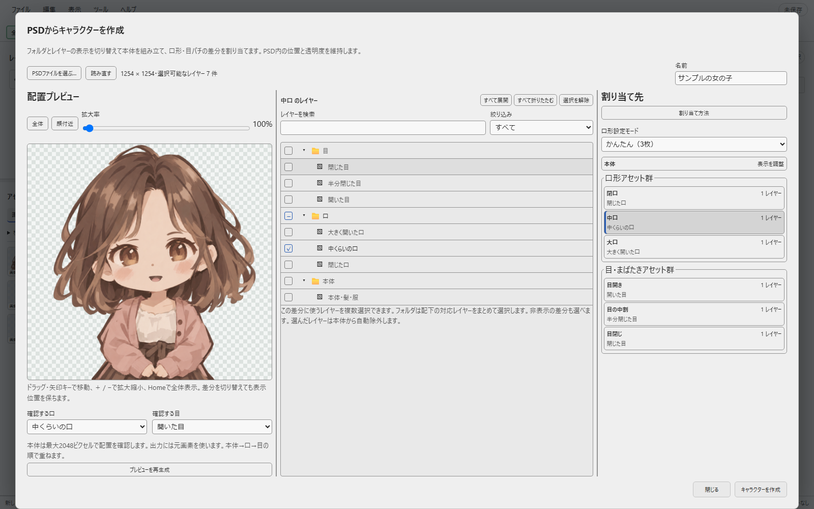
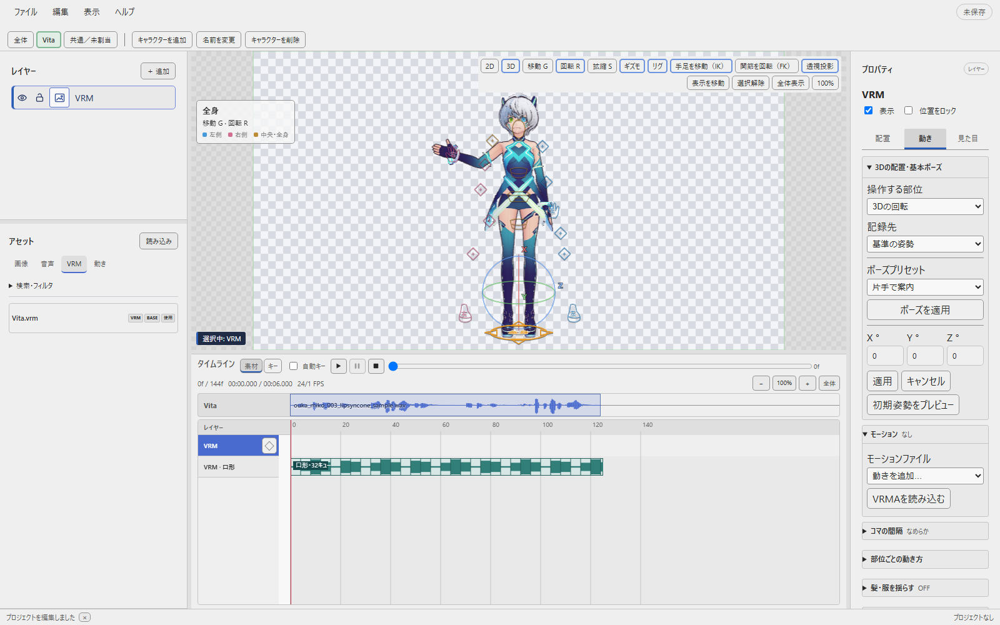
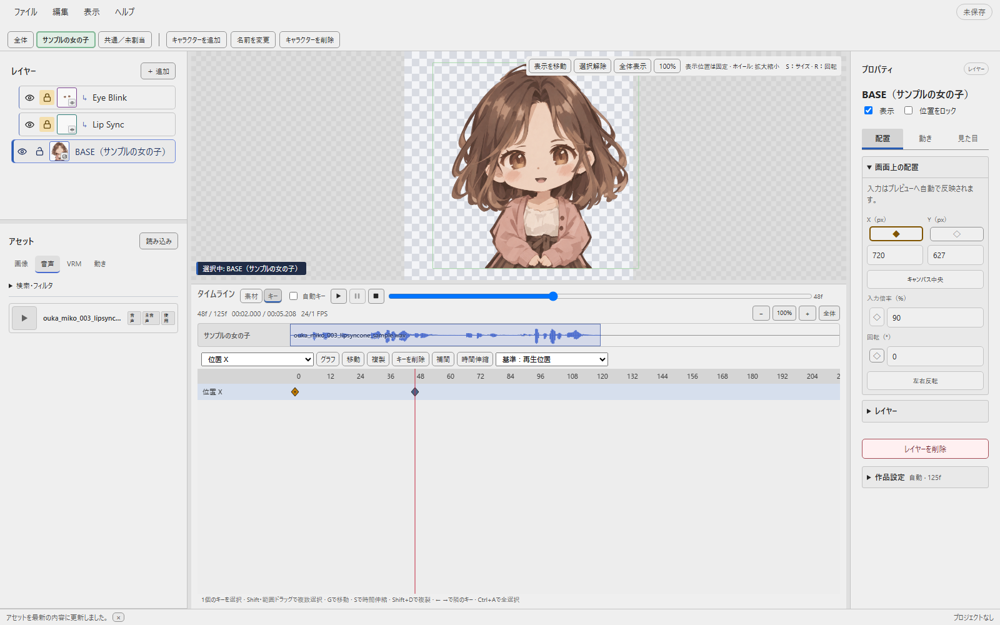
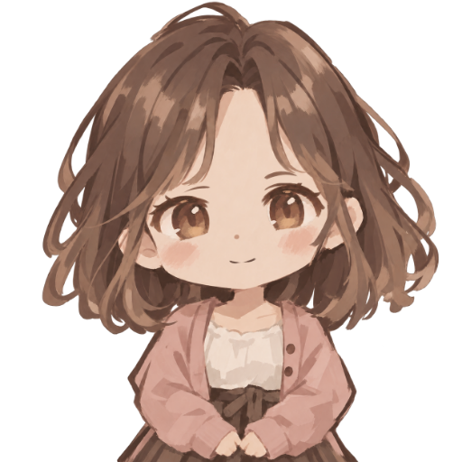
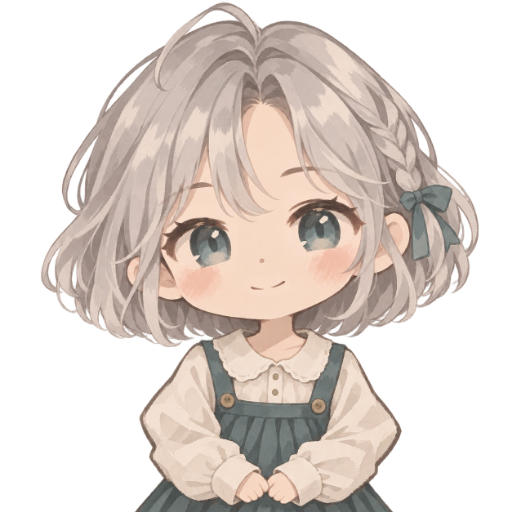

画像の数に合わせて、口の動きを
閉じ口と開き口の2枚から、中口を加えた3枚、Rhubarb A〜H/Xの9口形まで。持っている差分を使って始められます。
口形を設定する →LipSyncOne 0.5.1 · PSDからのキャラクター作成に対応
PSDのフォルダとレイヤーから、本体・口・目を選ぶ。音声を置けば、口パク付きの動画素材を作れます。
画像2枚・パーツ画像・VRMからも制作できます。ゆっくり実況や音声合成の解説動画に、いつもの編集ソフトへ重ねて使える素材を。

0.5.1のPSDワークフロー
PSD内の位置と透明度を保ち、差分を確認しながら作成できます。
「キャラクターを追加 → PSDから作成…」で読み込み、フォルダやレイヤーの目アイコンで本体の表示を選びます。
右で口形・目の状態を選び、中央のチェックで差分を割り当てます。選んだ差分は本体から自動除外されます。
キャラクターを作成し、音声行へWAVを配置します。解析された口パクと目パチを再生して調整します。
「ファイル → 動画を書き出す」から、仕上げる編集ソフトに合う形式を選んで保存します。
RGB・8bitの対応ラスターレイヤーが対象です。文字・特殊な合成・クリッピング・レイヤー効果などは完全には再現しません。対応範囲を確認する
慣れてきたら
2枚で始めて、差分を増やして。音声に合わせて動きを付け、気になるところをあとから調整できます。
閉じ口と開き口の2枚から、中口を加えた3枚、Rhubarb A〜H/Xの9口形まで。持っている差分を使って始められます。
口形を設定する →
口の開きが合わないときは、音量の影響度や無音しきい値を調整して再解析。日本語・その他／英語も音声ごとに選べます。
解析結果を調整する →PSDの口形モードを切り替えても、元へ戻すと割り当てを復元できます。同じPSDの読み直しでは、対応するレイヤーの設定を保持します。
レイヤー検索・絞り込み、プレビューの拡大・移動と列幅調整に対応。割り当て先を選ぶと、プレビューも同じ差分へ切り替わります。
目パチは音声に関係なく動きます。キャラクターごとに間隔や表示区間を調整できます。
目パチを付ける →描き直した素材をそのまま制作へ。ファイルの再読み込みで、位置や設定を保って続きを作れます。
素材の準備と更新 →音声の解析はローカルで行います。画像や音声を外部サービスへ送らず、追加の解析モデル取得も不要です。
VRMの操作画面
VRMモデルに口パクや目パチ、ポーズ、呼吸を付けられます。VRMAモーションを並べたり、キーを使って動かしたりできます。画像のキャラクターや背景と同じ作品に配置し、透明動画として書き出せます。




無料のVRM 1.0モデルと使いかた・出典をまとめたサンプルです。0.3系では読み込めません。
作者：pixiv inc. / coati。モデルの配布元・利用条件（CC0）と同梱の案内をご確認ください。
仕上げは、使い慣れたソフトで
口パク素材を書き出したら、背景や字幕と重ねて完成へ。形式は仕上げ先に合わせて選べます。
透明動画の書き出しを詳しく →| こんなときに | 選ぶ形式 |
|---|---|
| Premiere Proなどで仕上げる | ProRes 4444 AlphaMOV · 透明背景 |
| 容量を抑えて試す・保存する | 軽量WebM（VP9 Alpha）WebM · 透明背景 · 初期設定 |
| 画質を保ってマスターを残す | FFV1MKV · 透明背景 · 可逆圧縮 |
| Windowsで見え方を確認する | H.264 カラーキーMP4 · 色付き背景・透明度なし |
はじめての方へ
画像と音声、使いかたをZIPにまとめました。迷ったら、全身画像2枚で始められるサンプル3がおすすめです。

全身画像2枚で口パク
閉じ口・開き口の全身画像と、説明音声。切り抜きも、口の位置合わせも不要です。

口パクと目パチを試す
本体・口・目が分かれたパーツ素材。3段階の口と目で、やわらかな動きを作れます。

2人の会話にも
サンプル1と同じパーツ構成です。別のキャラクターとして追加し、掛け合いの練習にも。
画像はAIで生成・位置調整したもので、音声キャラクターの公式立ち絵ではありません。サンプル3に目パチの画像は含まれません。
音声はサンプル1：VOICEVOX:櫻歌ミコ（ノーマル）、サンプル2：VOICEVOX:春日部つむぎ（ノーマル）、サンプル3：VOICEVOX:猫使アル（ノーマル）です。作品の公開時は、使用した音声のクレジットを表記してください。
利用・再配布は各ZIPのREADMEと、櫻歌ミコ利用規約・春日部つむぎ利用規約・猫使アル利用規約・VOICEVOX利用規約をご確認ください。
困ったとき・始める前に
操作手順は、画面付きのヘルプでも確認できます。
ヘルプを開く →RGB・8bitの対応ラスターレイヤーを読み込めます。本体・口・目は複数レイヤーを合成できます。PSB、文字・調整レイヤー、特殊な合成や効果の完全再現には対応していません。PSDの対応範囲
はい。作品はPSD原本を参照します。別のPCへ渡すときは「アセットを収集」を使ってください。外部編集後は同じレイヤーの画素を更新しますが、レイヤー構成や位置の変更には注意が必要です。原本の保管と再読込
はい。無料サンプルに画像と音声、使いかたが入っています。最初はサンプル3の男の子を使うと、全身画像2枚を選ぶだけで口パクを試せます。サンプルを選ぶ
口だけが違う、同じ位置・大きさの全身画像2枚から始められます。本体と口を分けたパーツ素材も使えます。目パチを付ける場合は、目の開閉の差分も用意してください。素材の準備方法
音声合成ソフトで書き出したWAV・MP3や、録音した音声を読み込めます。音声ごとに「日本語・その他／英語」を選べます。口の動きは推定のため、声や発音によって結果が変わります。解析と調整の手順
セリフの音声に合わせて、キャラクターの口を動かす作成ツールです。LipSyncOneは口の差分画像を切り替える2Dコマアニメーションで、ゆっくり実況や解説動画に使う立ち絵素材を作ります。
はい。開いた目と閉じた目から、まばたき（瞬き）を自動で作れます。中割の画像を加え、間隔やばらつきを変えることもできます。キャラクターごとの表示区間を調整できます。目パチの設定
再生ソフトによっては、透明な部分が黒く表示されます。動画編集ソフトへ重ねて、透明度を確認してください。出力形式はProRes 4444 Alpha、FFV1、VP9 Alphaのいずれかを選びます。透明動画の書き出し
制作と音声解析はPC内で行います。画像や音声を外部サービスへ送りません。解析エンジンも同梱されています。アプリのダウンロードや更新確認にはインターネット接続が必要です。
基本の制作機能は無料で利用できます。BOOTHでは開発支援として購入でき、購入証明と先行・支援者向け機能へのアクセスが付属します。配布物の詳しい内容はBOOTHの商品ページをご確認ください。
Windows 11 x64 · v0.5.1
セットアップEXEを実行してインストール。
スタートメニューからLipSyncOneを起動できます。
v0.5.1を公開しました。PSD原本を専用タブで管理できるようになりました。新規プロジェクトの解像度・アスペクト比とプレビュー、再生操作や無音の配置も改善しています。
0.5.0からは「ヘルプ → アップデートを確認」で更新できます。起動時の自動確認は行いません。
旧ポータブル版をお使いの場合は、セットアップEXEでインストールしてください。保存済みのプロジェクトと素材は引き続き使えます。
セットアップEXEにはWindowsの実行ファイル署名を付けていません。Windowsの警告が出た場合は、公式配布元から入手したファイルか確認してください。警告が出たときの案内